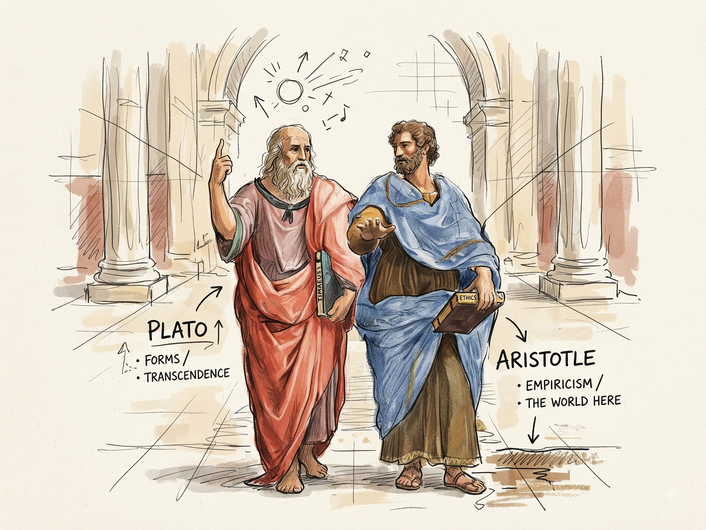

Philosophy
Here I collect philosophy readings and notes, including questions I’m thinking through as I read.
I find myself extremely lucky to be doing my academics study in something that is so closely related to my personal interests. I have been drawn towards philosophy since a long time, but I have only recently started to read it with a more deliberate focus on questions that are also relevant to AI conversation. I read to understand the philosophical conversations that shaped our understanding of intelligence, rationality, morality and human welfare. Philosophy and conversations in AI Safety. The two keep sending me back to each other, sometimes from very different perspectives, and sometimes in very different directions. Absolutely love it. However, it is also a very humbling experience for multiple reasons. First, there is SO much to read. Second, original readings are hard as hell and requires quality amount of time to understand a SINGLE excerpt. So a helpful activity that I am doing is parallely follow an introductory course on philosophy and an introductory book that goes a tad bit deeper, to get that birds eye kind of view over the literature. (crash course philosophy) is one I am currently watching few times a week and a little history of philosophy by Nigel Warburton. A thing about translations, they do make things a bit easy but there is always a sense of loss of nuance and personality that is embedded in the original text. Another of my complain is Formal philosophy. It was a nightmare to look at. It is like when you juice out the beauty of art from philosophy, you get a formal philosophy. Finally, the things that I do read and able to digest, just ends up making me realise how much I haven't considered. Anywho.
Questions about whether intelligence implies rationality, whether rationality has anything to say about morality, what it means to have values, and whether moral principles can be objectively grounded are something I am exploring lately (as of late 2026). These questions and debates existed long before artificial intelligence, and I read to understand some of the conversations that shaped them.
This is a growing collection of books, philosophical dialogues, papers, lectures and arguments that I find interesting. I'll add a few words about what caught my attention, along with questions or connections I make while reading. This isn't meant to be a formal reading list or a comprehensive account of any school of thought. It is simply a personal record of things I want to read, think about and return to.

1. General Philosophy Notes
A collection spanning different areas of philosophy: ethics, epistemology, metaphysics, philosophy of mind, political philosophy, philosophy of religion and more. Some readings will naturally fit into more than one category. I'll organise things where it helps, but I don't want the categories to become too rigid.
The first philosophy book I read was technically a novel: Albert Camus's The Stranger. It was an unusual introduction, and it left me wanting to read more about absurdism, meaning and the human condition.
What in the Ancient Greek philosophy
Plato vs Euthyphro
One of the first philosophical dialogues I spent time with. Socrates meets Euthyphro outside the
courthouse, and their conversation turns to the nature of piety. The question that stayed with me
is whether something is good because the gods love it, or whether the gods love it because it is
good. Socrates asks Euthyphro to define piety, but each definition runs into difficulties. The
dialogue ends without a settled definition, leaving behind a question about morality and its
foundations. I find the question interesting even outside its original religious context.
Read Euthyphro.
Plato and Apology
Socrates defends himself against the charges of impiety and corrupting the youth of Athens. I was
interested in his account of the examined life, his attitude towards wisdom and ignorance, and
his refusal to abandon philosophical questioning simply to save himself.
Read Apology.
Plato and Crito's
Crito visits Socrates in prison and urges him to escape before his execution. Socrates considers
whether escaping would itself be unjust, even if the sentence against him was unjust. The
conversation raises questions about law, obligation, justice and the relationship between a
citizen and the state.
Read Crito.
Plato and Phaedo
Set on the day of Socrates' execution, this dialogue deals with the soul, death and the possibility of an afterlife. Socrates presents several arguments for the immortality of the soul, and the conversation also touches on the theory of Forms.
Read Phaedo.
Plato's The Republic
Plato's dialogue on justice, the ideal city and the relationship between the individual and society. It also introduces the Allegory of the Cave, the philosopher-rulers and the theory of
Forms. I am particularly interested in how Plato connects knowledge, education and political
authority.
Read Republic.
Plato's Meno
A dialogue about whether virtue can be taught. It also raises the paradox of inquiry: how can we search for something if we do not already know what we are looking for?
Read Meno.
Aristotle's Nicomachean Ethics
Aristotle's account of virtue, character and human flourishing. I want to understand his idea of
eudaimonia and why he treats virtue as something developed through habit and practice, rather
than simply knowing what is right.
Read Nicomachean Ethics.
Existentialism, absurdism and meaning
Camus's The Stranger
A rather peculiar introduction to a philosophical novel, The Stranger was my first ever philosophy-related book I read. I did not have a hard copy of it so I read an ebook version. Finished it in 3 days. Meursault's detachment from familiar social expectations made me think about meaning, morality, grief and the expectations we place on one another. I would like to read more of Camus, especially The Myth of Sisyphus.
Where camus takes up the problem of the absurd: the tension between our desire for meaning and the
world's apparent indifference to that desire. The infamous image of Sisyphus returning to push the rock again is a useful starting point for thinking about how one might live without an ultimate explanation.
Find the book.
Jean-Paul Sartre's Existentialism Is a Humanism
is a short introduction to Sartre's account of freedom, responsibility and the idea that existence precedes essence. It is interesting to ponder how much responsibility this view places on individuals for the choices they make.
Read the lecture.
Knowledge, reason and the mind
René Descartes' Meditations on First Philosophy
Descartes begins by doubting anything that could possibly be mistaken, in search of something that remains certain. The method of doubt, the cogito and the evil demon thought experiment make this an interesting entry point into epistemology.
Read Meditations.
David Hume's Enquiry Concerning Human Understanding
Hume's account of experience, causation, induction and the limits of human understanding. The problem of induction is especially interesting. What justifies our expectation that the future will resemble the past?
Read the Enquiry.
Immanuel Kant's Groundwork of the Metaphysics of Morals
An introduction to Kant's moral philosophy, including the Categorical Imperative and the idea that people should be treated as ends in themselves, never merely as means. I want to understand
how Kant thinks reason can place constraints on action.
Read Groundwork.
Political philosophy and justice
John Rawls's A Theory of Justice
The original position and the veil of ignorance offer a way to think about fair principles of
society without knowing what position we ourselves would occupy. I find the thought experiment
useful because it asks what principles we would accept without knowing whether we would benefit
from them.
Plato's The Republic
Also belongs here for its treatment of political organisation, education, social roles and the question of who should govern.
Courses and reference material
I found this downloadable course on MIT OpenCourseWare about Classics of Western Philosophy while looking for a structured way to explore some of the major texts and arguments in the tradition. It includes readings and course material on philosophers such as Plato, Aristotle, Descartes and Kant.
Stanford Encyclopedia of Philosophy
Good to have these handy as I expect to return to often when I need a more careful introduction to a concept, philosopher or debate. Some starting points:
Virtue Ethics,
Epistemology,
Existentialism and
Deontological Ethics.
2. Philosophy and AI Safety
This is where the two interests overlap most directly for me. AI Safety discussions often involve assumptions about agency, rationality, values, morality, decision-making and human welfare. I find it useful to understand the philosophical conversations behind these assumptions rather than treating them as exclusively technical questions. Some connections below are made directly in the literature; others are questions I am exploring myself.
Intelligence, rationality and goals
Nick Bostrom's The Superintelligent Will
The orthogonality thesis separates intelligence from an agent's final goals: high intelligence
does not, by itself, determine what an agent ultimately wants. This is a useful starting point
for thinking about why making a system more capable does not automatically make its objectives
more desirable.
Read the paper.
Hume, Kant and the relationship between reason and motivation
I want to understand the disagreement between views that give desires a central role in
motivation and views that give practical reason a stronger normative role. This seems relevant
to questions about whether an intelligent system's reasoning tells us anything about what it
should value. This is a reading direction rather than a claim that either philosopher was
writing about artificial agents.
Values, morality and alignment
Iason Gabriel's Artificial Intelligence, Values, and Alignment (2020)
A paper that directly connects normative philosophy with technical AI alignment. Gabriel
distinguishes between aligning systems with instructions, intentions, revealed preferences,
ideal preferences, interests and values. I find this distinction important because these
targets can come apart, and choosing between them is not just an engineering decision.
Read the paper.
The Euthyphro dilemma and the foundations of value
A connection I have been thinking about myself. If we bring the Euthyphro question into an
alignment context, we can ask whether something is valuable because humans value it, or whether
humans value it because it is valuable. This is not a direct equivalence: the original dialogue
concerns piety and the gods. But it gives me a useful way to approach questions about whether
human preferences are the source of value or evidence about value.
Moral uncertainty by William MacAskill, Krister Bykvist and Toby Ord
What should an agent do when it is uncertain which moral theory is correct? Moral uncertainty
becomes especially interesting when decisions affect people with different moral commitments.
I want to understand how philosophers approach this without simply choosing whichever theory
gives the preferred answer.
Find the book.
Learning objectives, agency and decision theory
Hubinger et al. Risks from Learned Optimization in Advanced Machine Learning Systems (2019)
This paper introduces mesa-optimization: the possibility that a learned model itself becomes an
optimizer, with an objective that may differ from the objective used to train it. It raises
questions about what a system is actually optimising, and whether the training objective is a
reliable guide to its learned objective.
Read the paper.
Armstrong and Mindermann's "Occam's Razor Is Insufficient to Infer the Preferences of Irrational Agents" (2018)
An interesting connection between inverse reinforcement learning and the problem of inferring
preferences from behaviour. Observed actions do not necessarily reveal what an agent values,
particularly when the agent may be mistaken, inconsistent or limited in its understanding.
Read the paper.
Shanahan, McDonell and Reynolds's Role Play with Large Language Models (2023)
The authors suggest role-play as a useful way to describe language-model behaviour without
automatically attributing human-like beliefs or intentions to the model. I find this relevant
to discussions about apparent deception, self-awareness and how much agency we should infer
from a model's outputs.
Read the paper.
AI welfare and moral patienthood
Long, Sebo et al. Taking AI Welfare Seriously (2024)
Could some AI systems eventually have experiences that matter morally? This work explores
why AI welfare deserves serious consideration, what evidence might be relevant to assessing
it, and how uncertainty about AI consciousness should affect our decisions.
Read the paper.
Law, institutions and political philosophy
Hadfield-Menell and Hadfield's Incomplete Contracting and AI Alignment (2019)
An interesting connection between AI alignment, economics and legal theory. Human agreements
cannot specify what to do in every possible situation. Institutions, norms and legal systems
help us deal with the gaps. The paper explores what this might imply for specifying objectives
for AI systems.
Read the paper.
I'll keep expanding this section as I encounter more work at the intersection of philosophy and AI Safety. The above mentioned are good resources and were starting point for me. However, since, I am still in the exploratory phase of my reading, I believe I haven't yet read enough to form dialogues of my own. Though, I try.
A note on these entries: these are personal reading notes, not authoritative summaries. Some are things I have read; others are things I want to read or understand better. I'll try to make that distinction clearer as the collection grows, and update entries when my understanding changes.